Twilight - “Love beyond danger, hearts beyond worlds.”
"Twilight," directed by Catherine Hardwicke and based on the novel by Stephenie Meyer, is a romantic fantasy film that launched a massive cultural phenomenon. The story revolves around the burgeoning relationship between Bella Swan, a human teenager, and Edward Cullen, a centuries-old vampire. The film explores themes of love, identity, and the challenges of forbidden relationships, all set against a backdrop of supernatural intrigue. Some call it a forbidden love 🥀💔.
Main Event: The Truth about the Quileute Tribe
In "New Moon," Bella's world expands as she's drawn into the Quileute tribe's mysteries through her growing bond with Jacob. This introduction is a gradual reveal, highlighting Bella's vulnerability and reliance on the supernatural.
Initially, the Quileute are a familiar presence, with Jacob offering comfort after Edward's departure. Subtle hints of their distinct identity emerge: their history, connection to the land, and strained relationship with the Cullens.
As Bella spends time with Jacob, she notices changes in him and his friends, piquing her curiosity. Jacob remains evasive, creating intrigue around the tribe's secrets. The revelation of their true nature, shapeshifters who transform into wolves, is dramatic. Bella witnesses Jacob's transformation, forcing her to confront the supernatural.
Bella's acceptance of the Quileute is tied to her emotional recovery. Jacob and his pack offer security and belonging, filling the void left by Edward. They become her protectors, offering normalcy amidst the chaos. The Quileute becomes integral to Bella's emotional landscape, providing purpose and connection.
However, Bella's introduction to the Quileute involves navigating tensions between the tribe and vampires, learning of their ancient rivalry. This adds depth to Bella's understanding and highlights the challenges she faces.
In conclusion, Bella's introduction to the Quileute in "New Moon" gradually unveils their secrets, highlighting her vulnerability. Through Jacob and the tribe's legends, Bella gains a new understanding and finds solace. This unveiling also exposes her to conflicts within the supernatural world, setting the stage for future challenges.
Main Event: The Laws of Vampires, Edward's Surrender
"New Moon" plunges Bella into despair after Edward's departure, setting in motion a chain of events that unveils the powerful Volturi coven. Edward, believing Bella dead, seeks a swift end, leading him to the ancient vampires in Volterra, Italy. This desperate act serves as the primary introduction to the Volturi, revealing their role as enforcers of vampire law and their immense power.
Edward's grief-stricken decision to expose himself to humans during a festival in Volterra is driven by the belief that Bella is gone. He hopes to provoke the Volturi into destroying him, unable to bear the thought of living without her. This dramatic act immediately establishes the Volturi as a force to be reckoned with, a governing body capable of both granting and denying immortality.
The Volturi are initially presented as enigmatic figures, shrouded in mystery and ancient tradition. Their dwelling in Volterra, a city steeped in history, adds to their aura of power and authority. Key members like Aro, Marcus, and Caius are introduced, each possessing unique abilities that contribute to their control over the vampire world.
Bella's desperate race to Italy, guided by Alice's visions, becomes a race against time to save Edward from his suicidal intentions. This journey highlights the Volturi's significance, as Bella must confront this powerful coven to prevent Edward's destruction. Her willingness to face such a formidable force underscores the depth of her love for Edward and the lengths she will go to protect him.
The encounter with the Volturi reveals their strict adherence to vampire law and their concern for maintaining secrecy from the human world. They are portrayed as both regal and ruthless, willing to punish any vampire who threatens their authority or exposes their existence. This introduction establishes the Volturi as a major force in the "Twilight" universe, setting the stage for future conflicts and power struggles.
In conclusion, the introduction of the Volturi in "New Moon" is inextricably linked to Edward's near-fatal decision, driven by his mistaken belief in Bella's death. This dramatic event serves to unveil the Volturi's power, their role as enforcers of vampire law, and their significance in the larger vampire world, setting the stage for future conflicts and challenges in the "Twilight" saga.
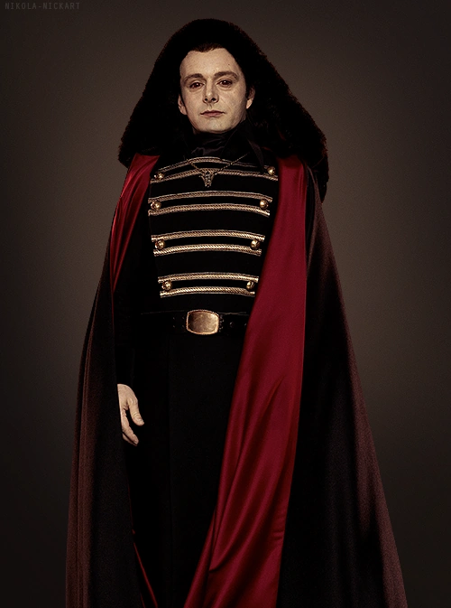
Michael Sheen as Aro
One of the Volturi leaders, Aro can read every thought a person has ever had through physical contact.
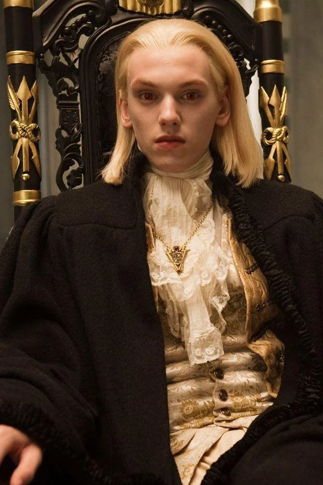
Christopher Heyerdahl as Marcus
Another Volturi leader, Marcus possesses the ability to sense relationships and emotional bonds.
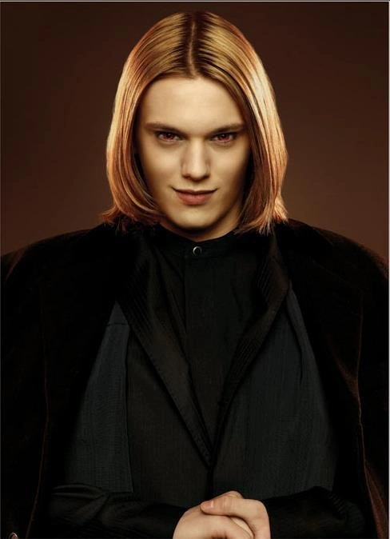
Jamie Campbell Bower as Caius
A Volturi leader with no known specific supernatural power, feared for his ruthlessness.
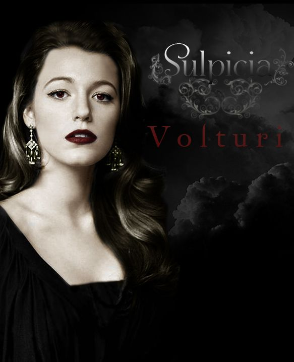
Rebecca Barras as Sulpicia
Aro’s wife and one of the Volturi leaders, she shares in their authority.
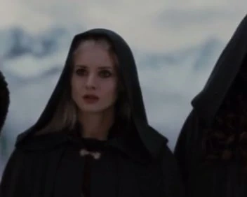
Abbie Dunn as Athenodora
Caius’ wife and another Volturi leader, part of the ruling circle.
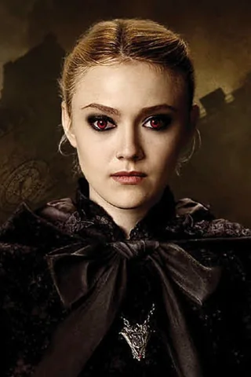
Dakota Fanning as Jane
A member of the Volturi guard, Jane can create illusions of pain to incapacitate enemies.
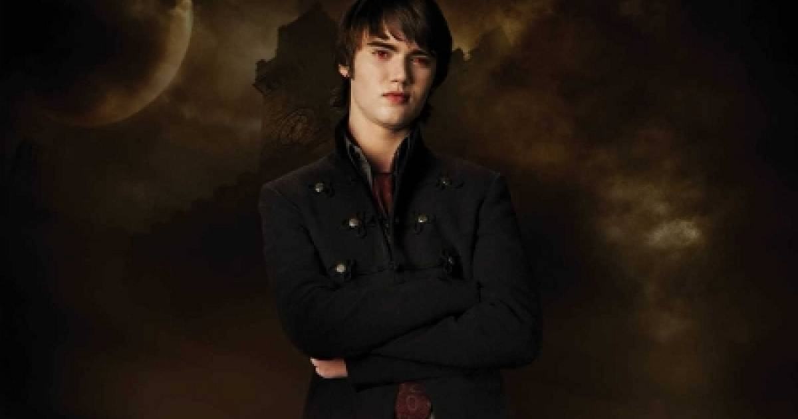
Cameron Bright as Alec
Jane’s twin brother, Alec can block others’ senses, leaving them defenseless.
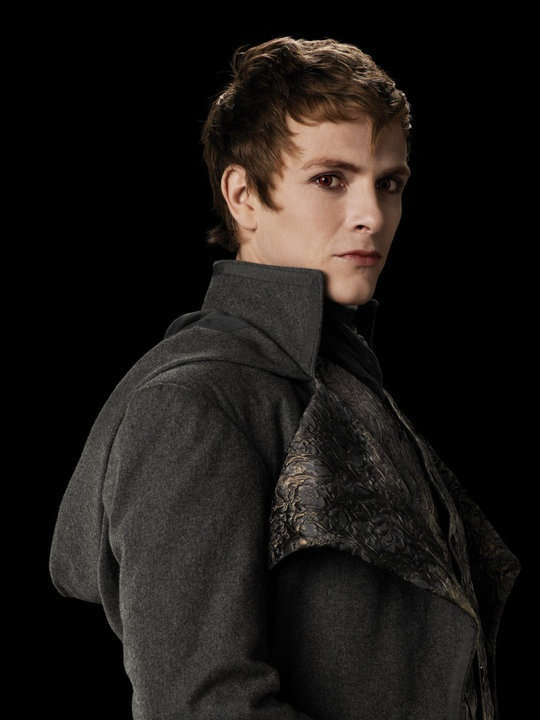
Charlie Bewley as Demetri
A tracker in the Volturi guard, Demetri can locate anyone once he knows the tenor of their mind.
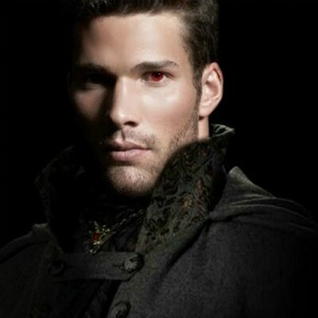
Daniel Cudmore as Felix
A strong and imposing Volturi guard member, feared for his brute force.
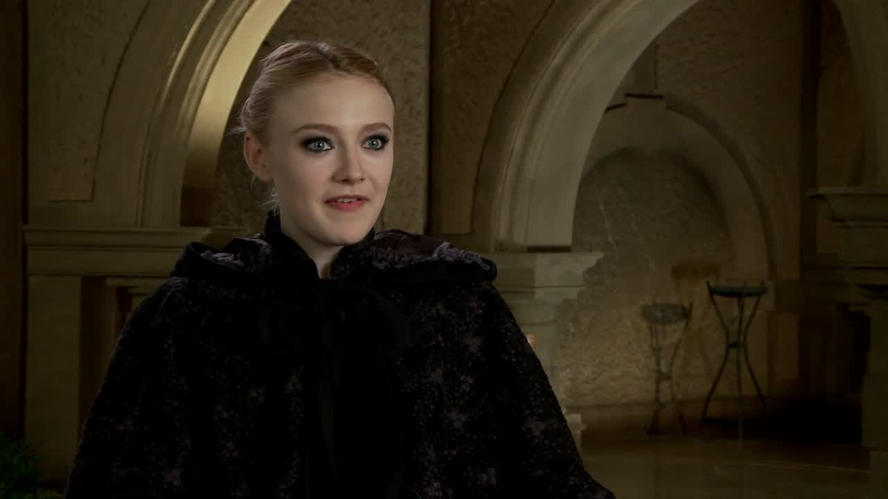
Noot Seear as Heidi
Heidi lures unsuspecting humans to the Volturi, ensuring a steady supply of victims.
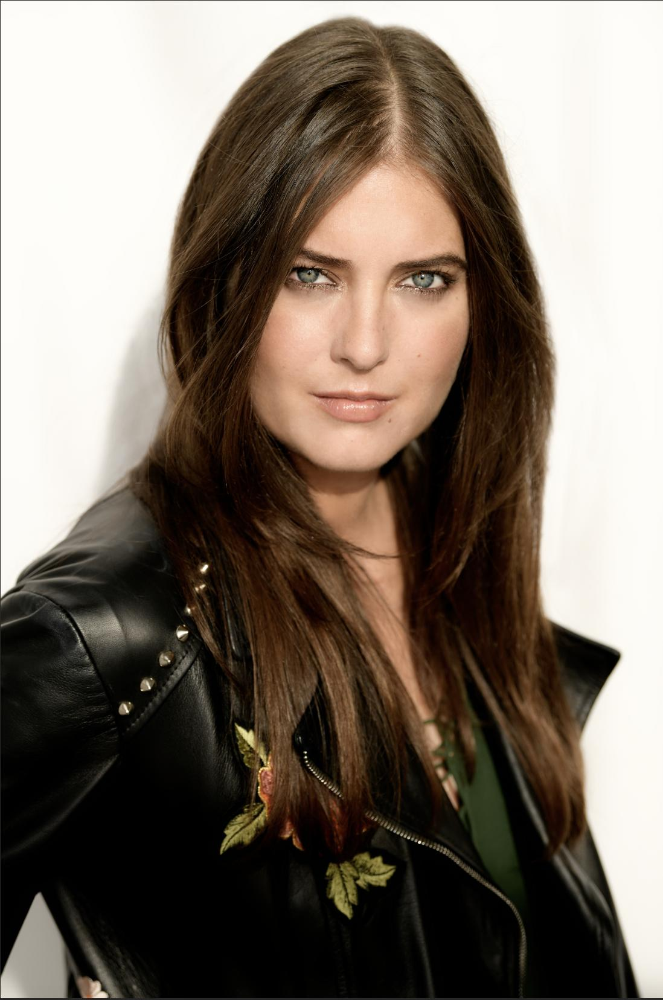
Justine Wachsberger as Gianna
A human secretary who hopes to become a vampire, but is ultimately killed by the Volturi.
Taylor Lautner as Jacob Black
Bella’s close friend and central figure in the love triangle, Jacob transforms into a large, rusty brown wolf.
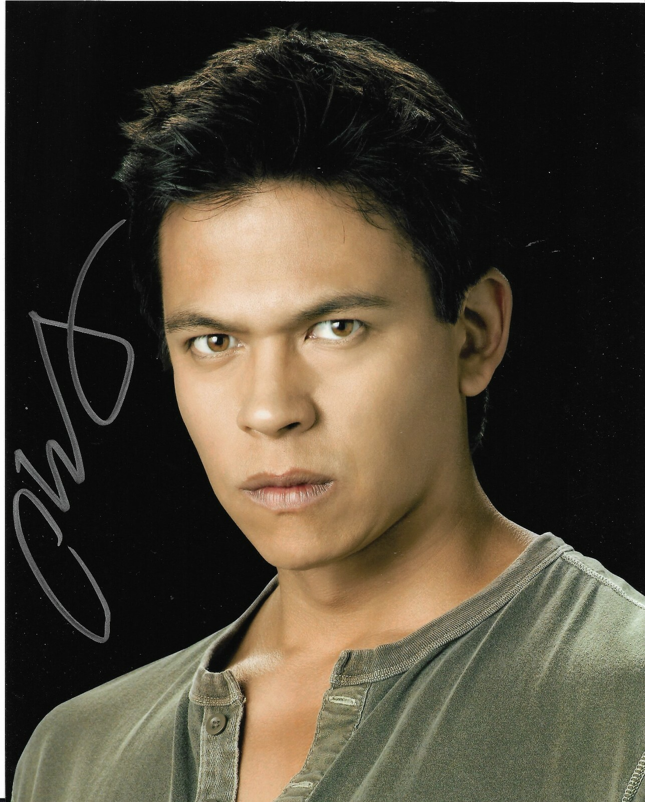
Chaske Spencer as Sam Uley
The pack leader, Sam transforms into an enormous, jet-black wolf.
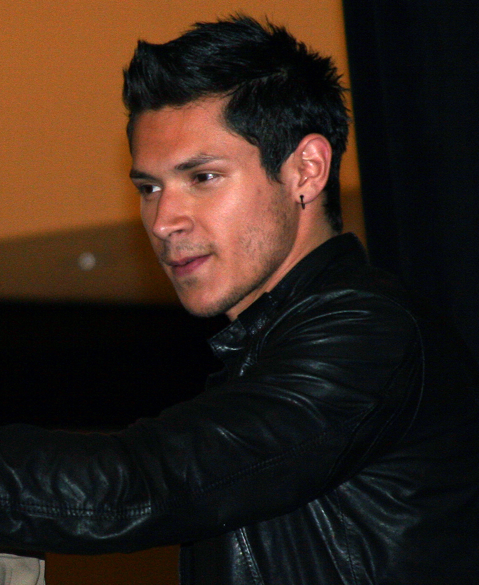
Alex Meraz as Paul Lahote
A volatile member of Sam’s pack, Paul’s wolf form is dark silver.
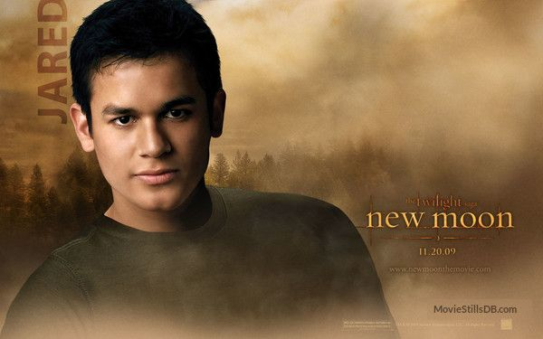
Bronson Pelletier as Jared Cameron
A loyal member of the pack, Jared’s wolf form has brown fur.
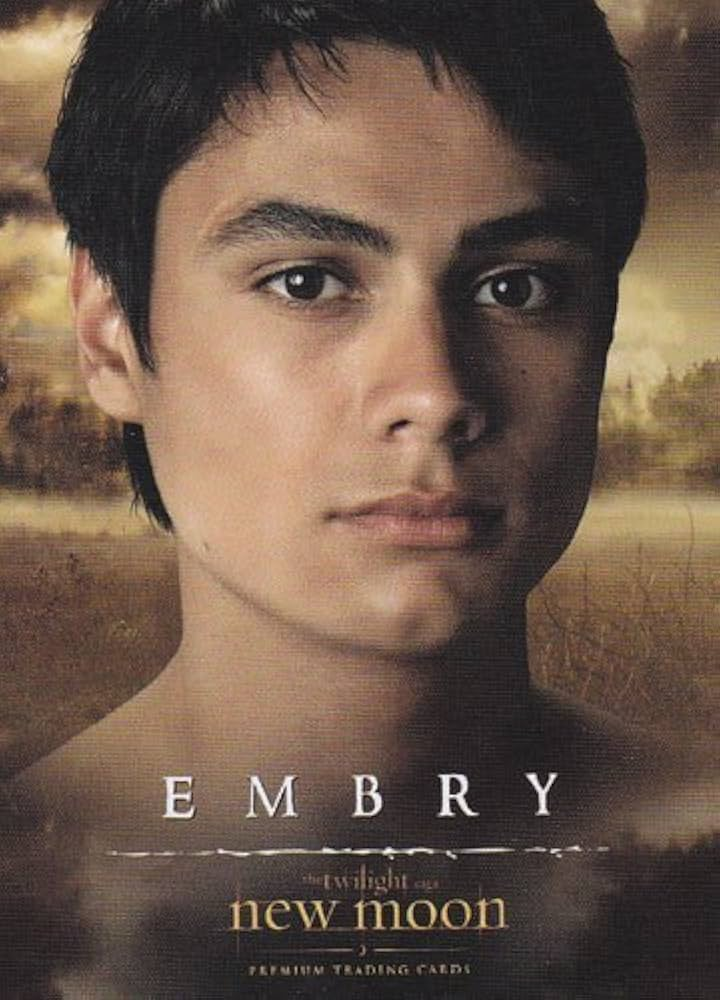